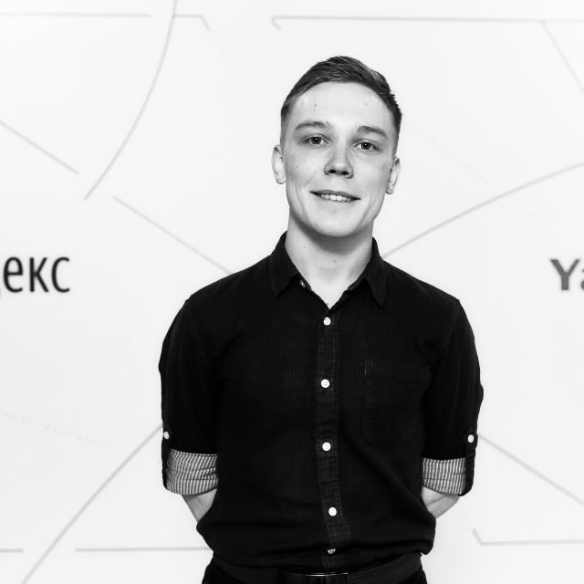

Contacts
- Email: kaigarodov2012@yandex.ru
- Telegram: https://t.me/kaigarodov
- VK: https://vk.com/a.kaygarodov
My expirience
- Front-end:
Sometimes I make a simple web page or landing page. Now I’m trying to use JS to add ajax and dynamic components to a project.- Html/CSS
- Bootstrap
- Back-end:
Usually I use the components below to send statics, connect to the database and create business logic.- Asp.net core
- Django/flask
- Desktop:
I am intensively studying these tools. This is most closely related to my work activities.- C++ + Qt Framework
-
Embedded:
- C + STM32CubeIDE
- Database:
- MySQL
- MongoDB
- PostgressSQL
- Other:
- Git
- Doker
Languages
English: A1 (Can read, listening, speaking and write with mistakes. Working on it)
About me
-
Objective and priority: My main Objective is to become a software developer. The main priority is to study the Qt framework and related technologies for working with systems and visualizing information.
-
Strengths: I like to understand the details. I am not limited to one set of technologies and am always ready to try or study something new.
-
Expirience:
- Unilever. Business Process Automation Department (Trainee) 02.01.2019-26.05.2020
- Prosoft Systems. Power Systems Automation Department (Tester junior) 07.02.2021 - Now.
Education
- Bachelors degree: Ural Federal University, Institute of New Materials and Technologies, Mechatronics and Robotics, (2016-2020).
- Master degree: Ural Federal University, Institute of Radio Electronics and Information Technologies, Management information systems, (2020 - 2022).
- Completed the C ++ development course from Prosoft Systems (Embedded and desktop)
Code exanple
void StartTaskUartOut(void *argument)
{
/* USER CODE BEGIN StartTaskUartOut */
T_IO_Message msg;
osStatus_t status;
uint8_t* data_ptr;
/* Infinite loop */
for(;;)
{
if(status == osOK)
{
data_ptr = msg.template_ptr == NULL ? msg.buff : msg.template_ptr;
while (HAL_UART_Transmit_IT(&huart3, data_ptr, strlen(data_ptr))==HAL_BUSY);
}
status = osMessageQueueGet(StdOutputHandle, &msg, NULL, 0U);
osDelay(1);
}
/* USER CODE END StartTaskUartOut */
}